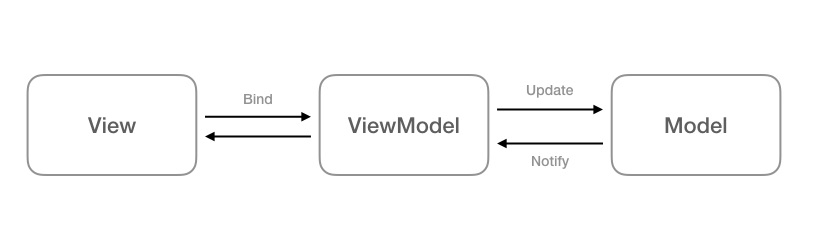
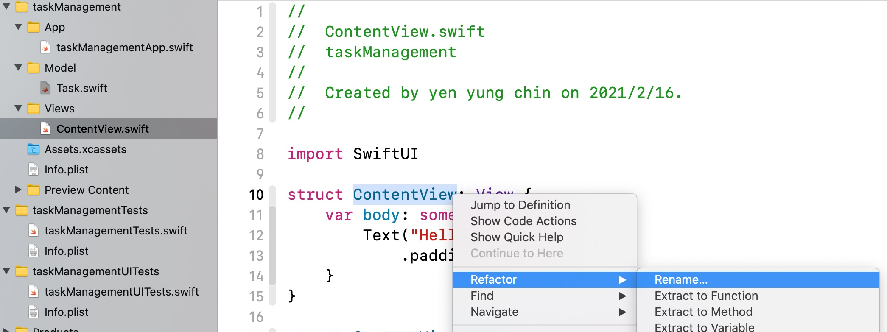
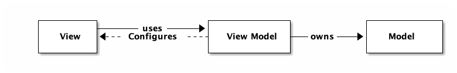
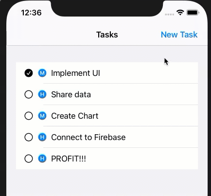
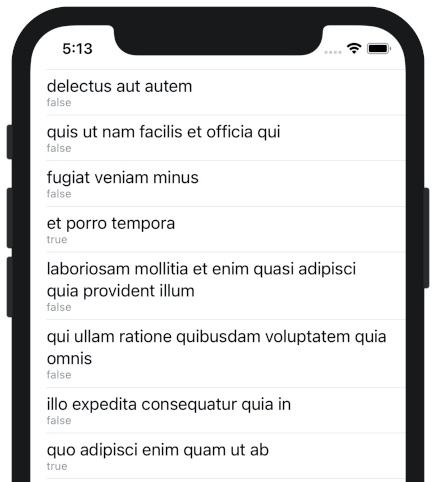
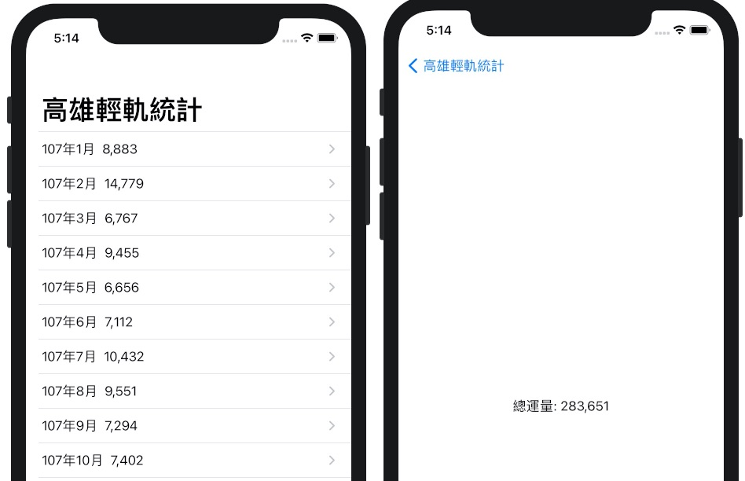
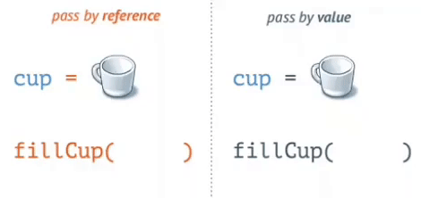

Advanced Swift Ui
Table of Contents
- 1. MVVM
- 2. Review
- 3. Advance function
- 4. Web API: URLSession v.s. JSONDecoder
- 5. Protocols
- 6. Enum
- 7. Struct v.s. Class
- 8. TODO some
- 9. TODO 進階主題
1 MVVM
1.1 Design pattern
MVVM 的概念最早應該是在 2005 年由 Microsoft的John Gossman提出來的，它的概念是，整個 Swift project 會拆分成三個部份: View、ViewModel、Model，其中 View 的角色就是單純的視覺元件，像是按鈕、文字標籤等等，在 View 裡面不會有邏輯、狀態等等，單純就是個呈現資料的元件。而要讓 View 呈現資料，最直覺的方式，就是把 View 跟 Model 做綁定，讓 View 的元件跟著 Model 一起做變化。但這樣會有個問題，就是通常 Model 來的資料，並不是簡單就能轉換成 View 的樣式的，這時候就需要有個物件，介在 View 跟 Model 的中間，這個物件會掌管這些跟 View 高度相關的邏輯的操作，像是轉換 Date 物件變成人看得懂的文字格式等，稱之為 ViewModel。上面的概念可以畫成這樣的資料流：

Figure 1: MVVM Architecture
在 iOS 開發上，依照上述 MVVM 的定義，ContentView 變成一個單純的 View，而我們會另外產生一個 ViewModel 來負責 presentational logic 跟部份的 controller logic。所以在View裡面，就只會有：
- View logic，所有跟呈現有關的 Code
- 綁定 ViewModel
而在 ViewModel 裡面，則是負責兩個部份：
- Controller logic，如 pagination, error handling,… etc
- Presentation logic，提供接口讓 View 綁定(binding)(提供適合在View中呈現的資料)
開發上，一旦 View 綁定好 ViewModel 的資料，在撰寫商業邏輯的時候，就可以不用管包括動畫、轉場、main thread 等等跟 View 相關的問題，因為分工明確所以就不會有寫起來綁手綁腳的感覺。更棒的是，並且因為 ViewModel 是一個單純的、沒有相依於 View 的物件，所以要做測試簡單多了！
資料來源: 歡迎來到真實世界 - 原來是那個傳說中的MVVM阿
1.2 What is the idea behind MVVM
1.2.1 Model
- Business logic
- UI Independent
1.2.2 View
- Presentation
- User interaction
1.2.3 ViewModel
- Presentation logic
- Glue between Model and View
1.2.4 為什麼要拆成三部份(What does it solve?)
- MVC - Massive View Controller
- Testability
- Code organization
- Code reusability
1.2.5 Limitations / Cons
- Requires binding
- Potential for boilerplate code
- Overkill for simple views and logic
- Doesn’t cover every case
1.3 DEMO
以“推薦書單”的 APP 為例:
Model: 包含書名、作者、出版社….，而實際的資料來源可能是雲端資料庫(Firebase)、Web API、本機資料庫(Core data)。
1: struct Book { 2: let title: String 3: let author: String 4: let dateReleased: String 5: let publishCamp: String 6: let publishCity: String 7: let isFavorite: Bool 8: }
- View: 在 APP 畫面上呈現 Model 中資料的元件，如 Text, Image, Button, List…..
ViewModel: 將 Model 中的資料取出，供 View 呈現，或是接受 View 輸入的資料，存回 Model。以“推薦書單 APP”為例，其 ViewModel 可能包含如下 struct:
1: struct BookDetailViewModel { 2: var book: Book 3: 4: var isFavorite: Bool 5: 6: init(book: Book) { 7: self.book = book 8: self.isFavorite = false 9: } 10: 11: var title: String { 12: return self.book.title 13: } 14: 15: var author: String { 16: return self.book.author 17: } 18: 19: var dateReleased: String { 20: return self.book.dateReleased 21: } 22: 23: // 呈現時要求以 遠流出版社(台北市) 的格式來呈現 24: var publisher: String { 25: let output = self.book.publishCamp + "(" + self.book.publishCity + ")" 26: return output 27: } 28: }
從 Model 中可以看到書籍的記錄欄位只有“出版社”(publishCamp)和“出版地點”(publishCity)，但若 app 對顯示結果的格式要求為“出版社(出版地點)”，則可以在 ViewModel 中來處理。
此外，如果在 View 上有一個 Favorite Button，則當 user 點了 Favorite 後，ViewModel 應負責將 struct 中的 isFavorite 改存 True，並回存至 Model 中。Model 的資料只能透過 ViewModel 來新增刪除，View 無法直接染指。
Model 與 UI 完全無關，單純用來儲存資料，ViewModel 為 Model 與 View 溝通的橋樑。
1.4 Model 要用 Struct 或是 Class
1.4.1 Struct 與 Class 的不同性質
首先，當我們指派 (assign) 一個實體給一個辨識符（identifier，也就是變數／常數名）的時候，如果該實體是 struct 的話，該辨識符所容納的會是該實體的所有內容；但如果它是 class 的話，這個辨識符就只會容納存放該實體的位址：
1: // 用 struct 定義 Dog。 2: struct Dog { 3: var name = "Bart" 4: } 5: // 整個 Dog 實體都會被存到 myDog 裡。 6: var myDog = Dog() 7: // 用 class 定義 Cat。 8: class Cat { 9: var name = "Mimi" 10: } 11: // myCat 只會儲存 Cat 實體的位址。Cat 實體本身會被存到別的地方。 12: var myCat = Cat()
也就是說，當我們使用辨識符的時候，如果它的型別是 struct 的話，我們在操作的實體都會是本地的。但是當我們在操作 class 型別的辨識符的話，那麼我們實際上是透過辨識符在操作一個遠端的實體。所以，當我們更改這些實體的屬性的時候，它們的行為就不太一樣了：
1: // 使用 struct。 2: var herDog = Dog() { 3: // 如果 herDog 有變動的話就顯示訊息。 4: didSet { 5: print("Her dog is changed!") 6: } 7: } 8: herDog.name = "Starlord" 9: // Her dog is changed! 10: // 使用 class。 11: var herCat = Cat() { 12: didSet { 13: print("Her cat is changed!") 14: } 15: } 16: herCat.name = "Mumu" 17: // 沒有訊息。
怎麼會有這樣的差別呢？因為 herDog 儲存了所有的 Dog 實體內容，所以任何 Dog 實體的屬性的變動，就等於說 herDog 本身有變動。然而，herCat 並沒有儲存 Cat 實體的內容，所以 Cat 實體屬性的變動是在別的地方發生的，且 herCat 本身所儲存的 Cat 實體位址並沒有任何的改變。
由圖1可看出，
1.4.2 MVVM 中的 Model
1.5 DICE DEMO
1.6 Further Reading Resources
- SwiftUI MVVM Programming with ObservableObject @Published @ObservedObject
- SwiftUI 2.0: MVVM - A Practical Approach
- SwiftUI Tip Calculator Using MVVM Design Pattern
- Understanding MVVM Design Pattern: 講的超清楚
- Video: MVVM SwiftUI - Model View ViewModel Pattern - Getting Started
- Video: https://www.youtube.com/watch?v=LntH6moCuo0
- Video: MVVM in Practice - RWDevCon Session - raywenderlich.com
- GitHub: https://github.com/rebeloper/SwiftUIMVVM.git
2 Review
- Functions: Tasks management project: task listing, adding, removing, editing
- Technoloties: View navigation, variable sharing, data model
參考資料: Building a To-Do List App with SwiftUI, Combine, and Firebase
2.1 Data Model
// // Task.swift // taskManagement // // Created by yen yung chin on 2021/2/18. // import Foundation struct Task: Identifiable { var id = UUID() var title: String var completed: Bool } #if DEBUG let testDataTasks = [ Task(title: "Implement UI", completed: true), Task(title: "Share data", completed: false), Task(title: "Create Chart", completed: false), Task(title: "Connect to Firebase", completed: false), Task(title: "PROFIT!!!", completed: false) ] #endif
2.2 Basic UI
2.2.1 Change struct name (ContentView.swift)
- right click on struct ContentView
- Refactor
- Rename…: to TaskListView
- The file name on navigator (left panel in Xcode) will be renamed to TaskListView.swift
2.2.2 classify files into the following group
- App
- View
Model

2.2.3 Create basic UI
2.2.3.1 TaskListView.swift
1: // 2: // ContentView.swift 3: // taskManagement 4: // 5: // Created by yen yung chin on 2021/2/16. 6: // 7: 8: import SwiftUI 9: 10: struct TaskListView: View { 11: let tasks = testDataTasks 12: var body: some View { 13: NavigationView { 14: VStack(alignment: .leading, spacing: 10, content: { 15: List(tasks) { task in 16: Image(systemName: "circle") 17: Text(task.title) 18: } 19: HStack(alignment: .center, spacing: 10, content: { 20: Image(systemName: "plus.circle.fill") 21: Text("New Task") 22: }).padding() 23: 24: }).navigationTitle("Tasks") 25: } 26: } 27: } 28: 29: struct ContentView_Previews: PreviewProvider { 30: static var previews: some View { 31: TaskListView() 32: } 33: } 34:
2.2.3.2 Extract the task cell
- Grouping the Image and Text with HStack
- cmd+click Htack
- Extract SubView
- Fix the compile error(inject needed variable)
1: // 2: // ContentView.swift 3: // taskManagement 4: // 5: // Created by yen yung chin on 2021/2/16. 6: // 7: 8: import SwiftUI 9: 10: struct TaskListView: View { 11: let tasks = testDataTasks 12: var body: some View { 13: NavigationView { 14: VStack(alignment: .leading, spacing: 10, content: { 15: List(tasks) { task in 16: TaskCell(task: task) 17: } 18: HStack(alignment: .center, spacing: 10, content: { 19: Image(systemName: "plus.circle.fill") 20: Text("New Task") 21: }).padding() 22: 23: }).navigationTitle("Tasks") 24: } 25: } 26: } 27: 28: struct ContentView_Previews: PreviewProvider { 29: static var previews: some View { 30: TaskListView() 31: } 32: } 33: 34: struct TaskCell: View { 35: var task: Task 36: var body: some View { 37: HStack { 38: Image(systemName: "circle") 39: Text(task.title) 40: } 41: } 42: } 43:
2.3 MVVM
以MVVM架構來開發project
2.3.1 ViewModel
2.3.1.1 Diagram for now

2.3.1.2 Model for the future

2.3.1.3 TaskCellViewModel
1: // 2: // TaskCellViewModel.swift 3: // taskManagement 4: // 5: // Created by yen yung chin on 2021/2/20. 6: // 7: 8: import Foundation 9: import Combine 10: 11: class TaskCellViewModel: ObservableObject, Identifiable { 12: @Published var task: Task 13: 14: @Published var completionStateIconName = "" 15: private var cancellables = Set<AnyCancellable>() 16: init(task: Task) { 17: self.task = task 18: $task 19: .map { task in 20: return task.completed ? "checkmark.circle.fill" : "circle" 21: } 22: .assign(to: \.completionStateIconName, on: self) 23: .store(in: &cancellables) 24: } 25: } 26:
2.3.1.4 TaskListViewModel
1: // 2: // TaskListViewModel.swift 3: // taskManagement 4: // 5: // Created by yen yung chin on 2021/2/20. 6: // 7: 8: import Foundation 9: import Combine 10: 11: class TaskListMiewModel: ObservableObject { 12: @Published var taskCellViewModels = [TaskCellViewModel]() 13: 14: init() { 15: self.taskCellViewModels = testDataTasks.map { task in 16: TaskCellViewModel(task: task) 17: } 18: } 19: 20: } 21:
2.3.2 View
TaskListView.swift
1: // 2: // ContentView.swift 3: // taskManagement 4: // 5: // Created by yen yung chin on 2021/2/16. 6: // 7: 8: import SwiftUI 9: 10: struct TaskListView: View { 11: @ObservedObject var taskListVM = TaskListMiewModel() 12: 13: var body: some View { 14: NavigationView { 15: VStack(alignment: .leading, spacing: 10, content: { 16: List(taskListVM.taskCellViewModels) { task in 17: TaskCell(taskCellVM: task) 18: } 19: HStack(alignment: .center, spacing: 10, content: { 20: Image(systemName: "plus.circle.fill") 21: Text("New Task") 22: }).padding() 23: 24: }).navigationTitle("Tasks") 25: } 26: } 27: } 28: 29: struct ContentView_Previews: PreviewProvider { 30: static var previews: some View { 31: TaskListView() 32: } 33: } 34: 35: struct TaskCell: View { 36: @ObservedObject var taskCellVM: TaskCellViewModel 37: 38: var body: some View { 39: HStack { 40: Image(systemName: taskCellVM.completionStateIconName) 41: Text(taskCellVM.task.title) 42: } 43: } 44: } 45:
2.4 New task
加入新增task功能，真正的新增功能由ViewModel實作，View負責界面及呼叫該功能
2.4.1 View
2.4.1.1 NewTaskView.swift
1: // 2: // NewTaskView.swift 3: // taskManagement 4: // 5: // Created by yen yung chin on 2021/2/20. 6: // 7: 8: import SwiftUI 9: 10: struct NewTaskView: View { 11: @ObservedObject var taskListVM = TaskListMiewModel() 12: @State var taskTitle: String = "" 13: 14: @Environment(\.presentationMode) var presentation 15: 16: var body: some View { 17: VStack { 18: Text("New Task") 19: .font(.largeTitle) 20: TextField("Enter task name", text: self.$taskTitle) 21: Button(action: { 22: taskListVM.addTask(task: Task(title: self.taskTitle, completed: false)) 23: self.presentation.wrappedValue.dismiss() 24: }, label: { 25: Text("Done") 26: }) 27: Spacer() 28: }.padding() 29: } 30: } 31: 32: struct NewTaskView_Previews: PreviewProvider { 33: static var previews: some View { 34: NewTaskView() 35: } 36: } 37:
2.4.1.2 TaskListView.swift
1: // 2: // ContentView.swift 3: // taskManagement 4: // 5: // Created by yen yung chin on 2021/2/16. 6: // 7: 8: import SwiftUI 9: 10: struct TaskListView: View { 11: @ObservedObject var taskListVM = TaskListMiewModel() 12: var body: some View { 13: NavigationView { 14: VStack(alignment: .leading, spacing: 10, content: { 15: List(taskListVM.taskCellViewModels) { task in 16: TaskCell(taskCellVM: task) 17: } 18: 19: 20: HStack(alignment: .center, spacing: 10, content: { 21: Image(systemName: "plus.circle.fill") 22: Button(action: /*@START_MENU_TOKEN@*/{}/*@END_MENU_TOKEN@*/, label: { 23: /*@START_MENU_TOKEN@*/Text("Button")/*@END_MENU_TOKEN@*/ 24: }) 25: Text("New Task") 26: }).padding() 27: 28: .navigationBarTitle("Tasks", displayMode: .inline) 29: 30: .navigationBarItems(trailing: NavigationLink( 31: destination: NewTaskView(taskListVM: taskListVM, taskTitle: ""), 32: label: { 33: Text("New Task") 34: })) 35: 36: }) 37: } 38: } 39: } 40: 41: struct ContentView_Previews: PreviewProvider { 42: static var previews: some View { 43: TaskListView() 44: } 45: } 46: 47: struct TaskCell: View { 48: @ObservedObject var taskCellVM: TaskCellViewModel 49: 50: var body: some View { 51: HStack { 52: Image(systemName: taskCellVM.completionStateIconName) 53: Text(taskCellVM.task.title) 54: } 55: } 56: } 57:
2.4.2 ViewModel
2.4.2.1 TaskListViewModel.swift
1: // 2: // TaskListViewModel.swift 3: // taskManagement 4: // 5: // Created by yen yung chin on 2021/2/20. 6: // 7: 8: import Foundation 9: import Combine 10: 11: class TaskListMiewModel: ObservableObject { 12: @Published var taskCellViewModels = [TaskCellViewModel]() 13: 14: init() { 15: self.taskCellViewModels = testDataTasks.map { task in 16: TaskCellViewModel(task: task) 17: } 18: } 19: 20: func addTask(task: Task) { 21: let task = TaskCellViewModel(task: task) 22: self.taskCellViewModels.append(task) 23: } 24: } 25:
2.5 Delete task
加入swipe進行刪除的功能，真正刪除的功能由ViewModel實作，View負責呼叫
2.5.1 View
2.5.1.1 TaskListView.swift
1: // 2: // ContentView.swift 3: // taskManagement 4: // 5: // Created by yen yung chin on 2021/2/16. 6: // 7: 8: import SwiftUI 9: 10: struct TaskListView: View { 11: @ObservedObject var taskListVM = TaskListMiewModel() 12: var body: some View { 13: NavigationView { 14: VStack(alignment: .leading, spacing: 10, content: { 15: List { 16: ForEach(taskListVM.taskCellViewModels) { task in 17: TaskCell(taskCellVM: task) 18: 19: } 20: .onDelete(perform: { indexSet in 21: taskListVM.deleteTask(indexSet: indexSet) 22: }) 23: } 24: 25: HStack(alignment: .center, spacing: 10, content: { 26: Image(systemName: "plus.circle.fill") 27: Button(action: /*@START_MENU_TOKEN@*/{}/*@END_MENU_TOKEN@*/, label: { 28: /*@START_MENU_TOKEN@*/Text("Button")/*@END_MENU_TOKEN@*/ 29: }) 30: Text("New Task") 31: }).padding() 32: 33: .navigationBarTitle("Tasks", displayMode: .inline) 34: 35: .navigationBarItems(trailing: NavigationLink( 36: destination: NewTaskView(taskListVM: taskListVM, taskTitle: ""), 37: label: { 38: Text("New Task") 39: })) 40: 41: }) 42: } 43: } 44: } 45: 46: struct ContentView_Previews: PreviewProvider { 47: static var previews: some View { 48: TaskListView() 49: } 50: } 51: 52: struct TaskCell: View { 53: @ObservedObject var taskCellVM: TaskCellViewModel 54: 55: var body: some View { 56: HStack { 57: Image(systemName: taskCellVM.completionStateIconName) 58: Text(taskCellVM.task.title) 59: } 60: } 61: } 62:
2.5.2 ViewModel
2.5.2.1 TaskListViewModel.swift
1:
1: // 2: // TaskListViewModel.swift 3: // taskManagement 4: // 5: // Created by yen yung chin on 2021/2/20. 6: // 7: 8: import Foundation 9: import Combine 10: 11: class TaskListMiewModel: ObservableObject { 12: @Published var taskCellViewModels = [TaskCellViewModel]() 13: 14: init() { 15: self.taskCellViewModels = testDataTasks.map { task in 16: TaskCellViewModel(task: task) 17: } 18: } 19: 20: func addTask(task: Task) { 21: let task = TaskCellViewModel(task: task) 22: self.taskCellViewModels.append(task) 23: } 24: 25: func deleteTask(indexSet: IndexSet) { 26: self.taskCellViewModels.remove(atOffsets: indexSet) 27: } 28: } 29:
2.6 enum v.s. picker
加入task的priority欄位(enum)
2.6.1 Model
以enum來表示task的不同優先權
2.6.1.1 Model.swift
1: // 2: // Task.swift 3: // taskManagement 4: // 5: // Created by yen yung chin on 2021/2/18. 6: // 7: 8: import Foundation 9: 10: enum TaskPriority: String, CaseIterable { 11: case high 12: case medium 13: case low 14: } 15: 16: struct Task: Identifiable { 17: var id = UUID() 18: var title: String 19: var priority: TaskPriority //只有三種可能性 20: var completed: Bool 21: } 22: 23: #if DEBUG 24: let testDataTasks = [ 25: Task(title: "Implement UI", priority: .medium, completed: true), 26: Task(title: "Share data", priority: .high, completed: false), 27: Task(title: "Create Chart", priority: .medium, completed: false), 28: Task(title: "Connect to Firebase", priority: .high, completed: false), 29: Task(title: "PROFIT!!!", priority: .high, completed: false) 30: ] 31: #endif 32:
2.6.2 View
2.6.2.1 TaskListView.swift
1: // 2: // ContentView.swift 3: // taskManagement 4: // 5: // Created by yen yung chin on 2021/2/16. 6: // 7: 8: import SwiftUI 9: 10: struct TaskListView: View { 11: @ObservedObject var taskListVM = TaskListMiewModel() 12: var body: some View { 13: NavigationView { 14: VStack(alignment: .leading, spacing: 10, content: { 15: List { 16: ForEach(taskListVM.taskCellViewModels) { task in 17: TaskCell(taskCellVM: task) 18: 19: } 20: .onDelete(perform: { indexSet in 21: taskListVM.deleteTask(indexSet: indexSet) 22: }) 23: } 24: 25: .navigationBarTitle("Tasks", displayMode: .inline) 26: 27: .navigationBarItems(trailing: NavigationLink( 28: destination: NewTaskView(taskListVM: taskListVM, taskTitle: "", priority: TaskPriority.low), 29: label: { 30: Text("New Task") 31: })) 32: 33: }) 34: } 35: } 36: } 37: 38: struct ContentView_Previews: PreviewProvider { 39: static var previews: some View { 40: TaskListView() 41: } 42: } 43: 44: struct TaskCell: View { 45: @ObservedObject var taskCellVM: TaskCellViewModel 46: 47: var body: some View { 48: HStack { 49: Image(systemName: taskCellVM.completionStateIconName) 50: Image(systemName: taskCellVM.priorityStateIconName) 51: .foregroundColor(Color.blue) 52: Text(taskCellVM.task.title) 53: } 54: } 55: }
2.6.2.2 NewTaskView.swift
新增task時改以Picker來選取enum中的子類別1
1: // 2: // NewTaskView.swift 3: // taskManagement 4: // 5: // Created by yen yung chin on 2021/2/20. 6: // 7: 8: import SwiftUI 9: 10: struct NewTaskView: View { 11: @ObservedObject var taskListVM = TaskListMiewModel() 12: @State var taskTitle: String = "" 13: @State var priority : TaskPriority 14: @Environment(\.presentationMode) var presentation 15: 16: var body: some View { 17: Form { 18: Text("New Task") 19: .font(.largeTitle) 20: TextField("Enter task name", text: self.$taskTitle) 21: // 以Picker來存取priority欄位的資料 22: Picker("Task Priority", selection: self.$priority) { 23: ForEach(TaskPriority.allCases, id: \.self) { 24: Text($0.rawValue) 25: } 26: } 27: Button(action: { 28: taskListVM.addTask(task: Task(title: self.taskTitle, priority: priority,completed: false)) 29: self.presentation.wrappedValue.dismiss() 30: }, label: { 31: Text("Done") 32: }) 33: Spacer() 34: }.padding() 35: } 36: } 37: 38: struct NewTaskView_Previews: PreviewProvider { 39: static var previews: some View { 40: NewTaskView( priority: TaskPriority.low) 41: } 42: } 43:
2.6.3 ViewModel
依priority高低傳回不同的Icon
2.6.3.1 TaskCellViewModel.swift
1: // 2: // TaskCellViewModel.swift 3: // taskManagement 4: // 5: // Created by yen yung chin on 2021/2/20. 6: // 7: 8: import Foundation 9: import Combine 10: 11: class TaskCellViewModel: ObservableObject, Identifiable { 12: @Published var task: Task 13: 14: @Published var completionStateIconName = "" 15: @Published var priorityStateIconName = "" 16: private var cancellables = Set<AnyCancellable>() 17: init(task: Task) { 18: self.task = task 19: $task 20: .map { task in 21: return task.completed ? "checkmark.circle.fill" : "circle" 22: } 23: .assign(to: \.completionStateIconName, on: self) 24: .store(in: &cancellables) 25: $task 26: .map { task in 27: return self.priorityIconName(task: self.task) 28: } 29: .assign(to: \.priorityStateIconName, on: self) 30: .store(in: &cancellables) 31: } 32: 33: func priorityIconName(task: Task) -> String { 34: switch task.priority { 35: case .low: 36: return "l.circle.fill" 37: case .medium: 38: return "m.circle.fill" 39: case .high: 40: return "h.circle.fill" 41: } 42: } 43: } 44:
2.6.4 結果

Figure 5: Picker v.s. enum
2.7 Tap on Icon to change completion and priority status
2.7.1 View
2.7.1.1 TaskListView.swift
1: // 2: // ContentView.swift 3: // taskManagement 4: // 5: // Created by yen yung chin on 2021/2/16. 6: // 7: 8: import SwiftUI 9: 10: struct TaskListView: View { 11: @ObservedObject var taskListVM = TaskListViewModel() 12: @State var showNewItem = false 13: var body: some View { 14: NavigationView { 15: VStack(alignment: .leading, spacing: 10, content: { 16: List { 17: ForEach(taskListVM.taskCellViewModels) { task in 18: TaskCell(taskCellVM: task) 19: 20: } 21: .onDelete(perform: { indexSet in 22: taskListVM.deleteTask(indexSet: indexSet) 23: }) 24: if self.showNewItem { 25: TaskCell(taskCellVM: TaskCellViewModel(task: Task(title: "", priority: TaskPriority.low, completed: false))) 26: } 27: } 28: .navigationBarTitle("Tasks", displayMode: .inline) 29: 30: .navigationBarItems(trailing: NavigationLink( 31: destination: NewTaskView(taskListVM: taskListVM, taskTitle: "", priority: TaskPriority.low), 32: label: { 33: Text("New Task") 34: })) 35: HStack { 36: Image(systemName: "plus.circle.fill") 37: Button(action: { 38: self.showNewItem.toggle() 39: }, label: { 40: Text("New Task") 41: }) 42: }.padding() 43: }) 44: } 45: } 46: } 47: 48: struct ContentView_Previews: PreviewProvider { 49: static var previews: some View { 50: TaskListView() 51: } 52: } 53: 54: struct TaskCell: View { 55: @ObservedObject var taskCellVM: TaskCellViewModel 56: 57: var body: some View { 58: HStack { 59: Image(systemName: taskCellVM.completionStateIconName) 60: .resizable() 61: .frame(width: 20, height: 20) 62: .onTapGesture { 63: // 變更完成狀態 64: taskCellVM.task.completed.toggle() 65: } 66: Image(systemName: taskCellVM.priorityStateIconName) 67: .resizable() 68: .frame(width: 20, height: 20) 69: .foregroundColor(Color.blue) 70: .onTapGesture { 71: // 變更優先權狀態 72: self.taskCellVM.changePriority(task: taskCellVM.task) 73: } 74: Text(taskCellVM.task.title) 75: } 76: } 77: }
2.7.2 ViewModel
2.7.2.1 TaskCellViewModel.swift
1: // 2: // TaskCellViewModel.swift 3: // taskManagement 4: // 5: // Created by yen yung chin on 2021/2/20. 6: // 7: 8: import Foundation 9: import Combine 10: 11: class TaskCellViewModel: ObservableObject, Identifiable { 12: @Published var task: Task 13: 14: @Published var completionStateIconName = "" 15: @Published var priorityStateIconName = "" 16: @Published var nextTaskPriority: TaskPriority = .low 17: private var cancellables = Set<AnyCancellable>() 18: init(task: Task) { 19: self.task = task 20: $task 21: .map { task in 22: return task.completed ? "checkmark.circle.fill" : "circle" 23: } 24: .assign(to: \.completionStateIconName, on: self) 25: .store(in: &cancellables) 26: $task 27: .map { task in 28: return self.priorityIconName(task: self.task) 29: } 30: .assign(to: \.priorityStateIconName, on: self) 31: .store(in: &cancellables) 32: } 33: 34: func priorityIconName(task: Task) -> String { 35: switch task.priority { 36: case .low: 37: return "l.circle.fill" 38: case .medium: 39: return "m.circle.fill" 40: case .high: 41: return "h.circle.fill" 42: } 43: } 44: 45: func changePriority(task: Task) { 46: switch task.priority { 47: case .low: 48: self.task.priority = .medium 49: case .medium: 50: self.task.priority = .high 51: case .high: 52: self.task.priority = .low 53: } 54: } 55: }
3 Advance function
3.1 filter()
filter() 宣告如下：
1: func filter(includeElement: (T) -> Bool) -> Array<T>
- includeElement 表示傳入的 function 或 closure，用來判斷陣列個元素是否符合條件。
- filter() 回傳結果為陣列。
3.1.1 在 closure 回傳每個元素使否符合判斷式的結果，決定最後 filter() 回傳的元素集合。1
1: var numbers = Array(1...8) 2: 3: var evenNumbers = numbers.filter { (x) -> Bool in 4: x % 2 == 0 5: } 6: 7: var oddNumbers = numbers.filter { (x) -> Bool in 8: x % 2 != 0 9: } 10: 11: numbers //return: [1, 2, 3, 4, 5, 6, 7, 8] 12: evenNumbers //return: [2, 4, 6, 8] 13: oddNumbers //return: [1, 3, 5, 7] 14:
3.1.2 將一、三象限的點過濾出來1
1: struct Point { 2: var x: Int 3: var y: Int 4: } 5: 6: var p1 = Point(x: 1, y: 1) 7: var p2 = Point(x: -1, y: 1) 8: var p3 = Point(x: -1, y: -1) 9: var p4 = Point(x: 1, y: -1) 10: var points = [p1, p2, p3, p4] 11: 12: var quadrant_1 = points.filter { (p) -> Bool in 13: return p.x > 0 && p.y > 0 14: } 15: 16: var quadrant_3 = points.filter { (p) -> Bool in 17: return p.x < 0 && p.y < 0 18: } 19: 20: points //return: [{x 1, y 1}, {x -1, y 1}, {x -1, y -1}, {x 1, y -1}] 21: quadrant_1 //return: [{x 1, y 1}] 22: quadrant_3 //return: [{x -1, y -1}] 23:
3.2 map()
map() 宣告如下：
1: func map<U>(transform: (T) -> U) -> Array<U>
- transform 表示傳入的 function 或 closure，用來轉換每個陣列的元素。輸入參數與回傳結果型別可以不同。
- map() 回傳結果為陣列。
3.2.1 透過map()將整數陣列轉化成兩倍數值與字串的陣列。1
1: var numbers = Array(1...8) 2: 3: var doubles = numbers.map { (n) -> Int in 4: return n*2 5: } 6: 7: var strings = numbers.map { (n) -> String in 8: let digital = [0:"零", 1:"壹", 2:"貳", 3:"参", 4:"肆", 5:"伍", 6:"陸", 7:"柒", 8:"捌", 9:"玖"] 9: return digital[n] ?? "啥" 10: } 11: 12: numbers //return: [1, 2, 3, 4, 5, 6, 7, 8] 13: doubles //return: [2, 4, 6, 8, 10, 12, 14, 16] 14: strings //return: ["壹", "貳", "参", "肆", "伍", "陸", "柒", "捌"] 15:
3.2.1.1 map()如何將一組二度空間的點對 X 軸與 Y 軸做鏡射。1
1: struct Point { 2: var x: Int 3: var y: Int 4: } 5: var points = [Point(x: 1, y: 2), Point(x: -2, y: -1)] 6: 7: var mirror_x = points.map { (p) -> Point in 8: return Point(x: -p.x, y: p.y) 9: } 10: 11: var mirror_y = points.map { (p) -> Point in 12: return Point(x: p.x, y: -p.y) 13: } 14: 15: points //return: [{x 1, y 2}, {x -2, y -1}] 16: mirror_x //return: [{x -1, y 2}, {x 2, y -1}] 17: mirror_y //return: [{x 1, y -2}, {x -2, y 1}] 18:
3.3 debounce
What is debounce? Its a function which forces the execution to wait a certain amount of time before running again.2
3.3.1 Example
source: SwiftUI + Combine = ❤️
3.3.1.1 UI
1: struct ContentView: View { 2: 3: @ObservedObject private var userViewModel = UserViewModel() 4: 5: var body: some View { 6: Form { 7: Section { 8: TextField("Username", text: $userViewModel.username) 9: .autocapitalization(.none) 10: } 11: Section { 12: SecureField("Password", text: $userViewModel.password) 13: SecureField("Password again", text: $userViewModel.passwordAgain) 14: } 15: Section { 16: Button(action: { }) { 17: Text("Sign up") 18: }.disabled(!userViewModel.valid) 19: } 20: } 21: } 22: } 23: 24: struct ContentView_Previews: PreviewProvider { 25: static var previews: some View { 26: ContentView() 27: } 28: }
3.3.1.2 ViewModel
1: class UserViewModel: ObservableObject { 2: // Input 3: @Published var username = "" 4: @Published var password = "" 5: @Published var passwordAgain = "" 6: 7: // Output 8: @Published var isValid = false 9: 10: $username 11: .debounce(for: 0.8, scheduler: RunLoop.main) 12: .removeDuplicates() 13: .map { input in 14: return input.count >= 3 15: } 16: .assign(to: \.valid, on: self) 17: .store(in: &cancellableSet) 18: }
4 Web API: URLSession v.s. JSONDecoder
4.1 Demo 1
4.1.1 ContentView.swift
1: import SwiftUI 2: 3: struct Todo: Codable, Identifiable { 4: public var id: Int 5: public var title: String 6: public var completed: Bool 7: } 8: 9: class FetchToDo: ObservableObject { 10: // 1. 11: @Published var todos = [Todo]() 12: 13: init() { 14: let url = URL(string: "https://jsonplaceholder.typicode.com/todos")! 15: // 2. 16: URLSession.shared.dataTask(with: url) {(data, response, error) in 17: do { 18: if let todoData = data { 19: // 3. 20: let decodedData = try JSONDecoder().decode([Todo].self, from: todoData) 21: DispatchQueue.main.async { 22: self.todos = decodedData 23: } 24: } else { 25: print("No data") 26: } 27: } catch { 28: print("Error") 29: } 30: }.resume() 31: } 32: } 33: 34: struct ContentView: View { 35: // 1. 36: @ObservedObject var fetch = FetchToDo() 37: var body: some View { 38: VStack { 39: // 2. 40: List(fetch.todos) { todo in 41: VStack(alignment: .leading) { 42: // 3. 43: Text(todo.title) 44: Text("\(todo.completed.description)") // print boolean 45: .font(.system(size: 11)) 46: .foregroundColor(Color.gray) 47: } 48: } 49: } 50: } 51: }

4.2 Demo 2
4.2.1 MVVM
- Model: FlowModel.swift
- View: ContentView.swift
- ViewModel: Flow.swift
4.2.2 FlowModel.swift
1: import Foundation 2: 3: struct FlowModel: Decodable, Hashable { 4: var 年: Int? = nil 5: var 月: Int? = nil 6: var 總運量: Int? = nil 7: var 日均運量: Int? = nil 8: var 假日均運量: Int? = nil 9: var 月台上刷卡日均筆數: Double? = nil 10: var 車上刷卡日均筆數: Double? = nil 11: var 售票機日均筆數: Double? = nil 12: var 補票日均筆數: Double? = nil 13: var 團體票日均筆數: Double? = nil 14: }
4.2.3 ContentView.swift
1: import SwiftUI 2: 3: struct ContentView: View { 4: @ObservedObject var flow = FetchFlow() 5: 6: var body: some View { 7: NavigationView { 8: List() { 9: ForEach(flow.flows, id: \.self) {(item) in 10: NavigationLink(destination: Text("總運量: \(item.總運量!)")) { 11: HStack { 12: Text("\(item.年!)年\(item.月!)月") 13: Text("\(item.日均運量!)") 14: } 15: } 16: } 17: }.navigationTitle("") 18: } 19: } 20: } 21: struct ContentView_Previews: PreviewProvider { 22: static var previews: some View { 23: ContentView() 24: } 25: } 26:
4.2.4 Flow.swift
1: import Foundation 2: class FetchFlow: ObservableObject { 3: @Published var flows = [FlowModel]() 4: init() { 5: let urlstr = "https://data.kcg.gov.tw/dataset/6f29f6f4-2549-4473-aa90-bf60d10895dc/resource/30dfc2cf-17b5-4a40-8bb7-c511ea166bd3/download/lightrailtraffic.json" 6: guard let url = URL(string: urlstr) else { 7: print("Invalid json url") 8: return 9: } 10: URLSession.shared.dataTask(with: url) {(data, response, error) in 11: do { 12: if let flowData = data { 13: let decodeData = try JSONDecoder().decode([FlowModel].self, from: flowData) 14: 15: DispatchQueue.main.async { 16: self.flows = decodeData 17: } 18: } else { 19: print("No data") 20: } 21: } catch { 22: print("\(error)") 23: } 24: }.resume() 25: } 26: }
4.2.5 Result

4.3 公開資料平台
4.4 Further Reading
- SwiftUI Tutorial - Using an API and Decoding JSON Data
- iOS Swift Tutorial: Use Web APIs and JSON Data with Swift 5- SwiftUI Fetch JSON Data into List
- Parse JSON from file and URL with Swift
- Making an API call and fetch JSON data in SwiftUI
- The best way to encode and decode JSON in Swift4
- JSONDecoder fails if I don’t have an “id” for each item… why doesn’t UUID work?
- 解決Json Key不固定時出現“No value associated with key CodingKeys” 狀況
5 Protocols
- Protocols are a fundamental feature of Swift. They play a leading role in the structure of the Swift standard library and are a common method of abstraction. They provide a similar experience to interfaces that some other languages have. An advantage of protocols in Swift is that objects can conform to multiple protocols.3
- Protocol 是一個只宣告不定義的型別，然而這個特性可以讓我們的程式更有彈性，像在 IOS SDK 裡面，耳熟能詳的 Delegate，就大量的運用 Potocol，方便我們客製化事件發生時要處理的事情。4
- 對任何程式開發來說，減少重覆的 code，把權責明確分開，讓 code 維護性變好，是非常重要的課題。而在現今的軟體開發模式中，有許多方法可以做到這點，最為人所知的一個模式，就是利用繼承 (Inheritance)，把會重覆利用的部份放在母類別，讓其它子類別去繼承。另外一種做法，則是利用 Composition Pattern，將功能做成組件分出來，讓需要的模組去組合取用。5
A protocol defines a blueprint of methods, properties, and other requirements that suit a particular task or piece of functionality. The protocol can then be adopted by a class, structure, or enumeration to provide an actual implementation of those requirements. Any type that satisfies the requirements of a protocol is said to conform to that protocol. 6
- 協定提供類型可以做的資訊，Classes 和 structs 則提供物件的資訊，協定則提供物件將會執行的動作。7
協定是 Swift 一個重要的特性，它會定義出為了完成某項任務或功能所需的方法、屬性，但是本身不會實作這些任務跟功能，而僅僅只是表達出該任務或功能的名稱。協定為方法、屬性、以及其他特定的任務需求或功能定義藍圖。協定可被 class、struct、或 enum 類型採納以提供所需功能的具體實現。滿足了協定中需求的任意類型都叫做遵循了該協定。
除了指定遵循類型必須實現的要求外，你可以擴展一個協定以實現其中的一些需求或實現一個符合類型的可以利用的附加功能。8
- 例如，你可能有一個名為 str 的變量，其類型為 String。身為一個開發人員，你應該知道 str 代表 String，如果我們定義了一個名為 StringProtocol 的協定，它具有所有的 String 的 API，我們可以擴展任何類型去遵循 StringProtocol（意思是滿足其所有要求），如此一來，即可以使用該對象，讓它就像是一個 String，儘管我們不知道它是什麼！如果看起來像一隻鴨子，游泳像一隻鴨子，叫聲像一隻鴨子，那就是一隻鴨子。我們新的 StringProtocol 可以告訴那些遵守它協定的類型能夠做什麼，且不需要知道這些類型的資訊。7
5.1 Protocol Syntax
5.1.1 Syntax
1: protocol SomeProtocol { 2: // protocol definition goes here 3: }
Classes , structs, enums can adopt these protocol by placing protocol’s name after the type’s name, separated by a colon, as part of their definition. Multiple protocols can be listed, and are separated by commas:9
1: struct SomeStructure: FirstProtocol, AnotherProtocol { 2: //structure definition goes here 3: }
5.1.2 DEMO
1: protocol Polite { 2: func sayHello() 3: } 4: 5: struct Teacher: Polite { 6: var name: String 7: func sayHello() { 8: print("同學好") 9: } 10: } 11: 12: struct Student: Polite { 13: var name: String 14: func sayHEllo() { 15: print("老師好") 16: } 17: } 18: 19: var aPolitePerson: Polite = Teacher() 20: aPolitePerson.name = "Mr. Yen" 21: aPolitePerson.sayHellow() 22: aPolitePerson = Student() 23: aPolitePerson.sayHello()
5.1.3 Adding property requirements
source: All about protocols in swift
- A protocol can have properties as well as methods that a class, enum or struct conforming to this protocol can implement.
- A protocol declaration only specifies the required property name and type. It doesn’t say anything about whether the property should be a stored one or a computed one.
- A protocol also specifies whether each property must be gettable or gettable and settable.
- Property requirements are always declared as variable properties, prefixed with the var keyword.
- Gettable and settable properties are indicated by writing { get set } after their type declaration, and gettable properties are indicated by writing { get }.
1: protocol SomeProtocol { 2: var mustBeSettable: Int { get set } 3: var doesNotNeedToBeSettable: Int { get } 4: }
5.1.4 Protocols with mutating methods
Mutating methods are methods that we use on value types like structs and enums. These methods are allowed to modify the instance it belongs to and any properties of that instance. A small example:
Consider a simple struct Rectangle:
1: struct Rectangle { 2: var width = 1 3: var height = 1 4: 5: func area() -> Int { 6: return width * height 7: } 8: 9: mutating func scaleBy(value: Int) { 10: width *= value 11: height *= value 12: } 13: }
The scaleBy(value:) method modifies the value of width and height. So it should be marked as mutating. Otherwise the compiler will throw error at you.
If you mark a protocol instance method requirement as mutating, you do not need to write the mutatingkeyword when writing an implementation of that method for a class. The mutating keyword is only used by structures and enumerations.
Consider an enum and class implementing a protocol with mutating function:
1: protocol Togglable { 2: mutating func toggle() 3: } 4: 5: enum OnOffSwitch: Toggglable { 6: case off, on 7: mutating func toggle() { 8: switch self { 9: case .off: 10: self = .on 11: case .on: 12: self = .off 13: } 14: } 15: } 16: 17: var lightSwitch = OnOffSwitch.off 18: lightSwitch.toggle() 19: 20: class ToggleClass: Togglable { 21: var someBool = false 22: func toggle() { 23: someBool = true 24: } 25: } 26: 27: let toggleClassObj = ToggleClass() 28: toggleClassObj.toggle()
5.1.5 Initializer Requirements
Protocols can have specific initializers like normal methods which the conforming types can implement.
1: protocol SomeProtocol { 2: init(someParameter: Int) 3: }
5.2 DEMO
1: protocol Sound { 2: func makeSound() 3: } 4: 5: struct Dog: Sound { 6: func makeSound() { 7: print("Woof") 8: } 9: } 10: 11: struct Tree: Sound { 12: func makeSound() { 13: print("Susrrate") 14: } 15: } 16: 17: struct iPhone: Sound { 18: func makeSound() { 19: print("Ring") 20: } 21: }
5.3 範例
5.3.1 版本 1
本例中有兩個 struct: Song, Album 以及一個 class 用來播放 Song 或 Album，原本的 Player 要為不同的 struct 寫不同的 func，而且程式碼大多重複。
1: import Cocoa 2: import AVKit 3: 4: struct Song { 5: var name: String 6: var album: Album 7: var audioURL: URL 8: var isLiked: Bool 9: } 10: 11: struct Album { 12: var name: String 13: var imageURL: URL 14: var audioURL: URL 15: var isLiked: Bool 16: } 17: 18: class Player { 19: private let avPlayer = AVPlayer() 20: 21: func play(_ song: Song) { 22: let item = AVPlayerItem(url: song.audioURL) 23: avPlayer.replaceCurrentItem(with: item) 24: avPlayer.play() 25: } 26: 27: func play(_ album: Album) { 28: let item = AVPlayerItem(url: album.audioURL) 29: avPlayer.replaceCurrentItem(with: item) 30: avPlayer.play() 31: } 32: }
5.3.2 版本 2
宣告一個 protocol，定義 audioURL 變數(read only)，然後令兩個 struct 皆遵循該 protocol(方式有二)，如此，原本的 Player class 中的 play func 就能只寫一次。
1: import Cocoa 2: import AVKit 3: 4: protocol Playable { 5: var audioURL: URL { get } 6: } 7: 8: struct Song: Playable { 9: var name: String 10: var album: Album 11: var audioURL: URL 12: var isLiked: Bool 13: } 14: 15: struct Album { 16: var name: String 17: var imageURL: URL 18: var audioURL: URL 19: var isLiked: Bool 20: } 21: 22: extension Album: Playable {} 23: class Player { 24: private let avPlayer = AVPlayer() 25: 26: func play(_ resource: Playable) { 27: let item = AVPlayerItem(url: resource.audioURL) 28: avPlayer.replaceCurrentItem(with: item) 29: avPlayer.play() 30: } 31: }
5.3.3 版本 3
原本 protocol 的真正意思其實只是在確定 audioURL 是否能正確轉換成 Audio，所以其實將 protocol name 由 Playable 改為 AudioURLConvertable 會更貼近事實。
1: import Cocoa 2: import AVKit 3: 4: protocol AudioURLConvertable { 5: var audioURL: URL { get } 6: } 7: 8: struct Song: AudioURLConvertable { 9: var name: String 10: var album: Album 11: var audioURL: URL 12: var isLiked: Bool 13: } 14: 15: struct Album: AudioURLConvertable { 16: var name: String 17: var imageURL: URL 18: var audioURL: URL 19: var isLiked: Bool 20: } 21: 22: class Player { 23: private let avPlayer = AVPlayer() 24: 25: func play(_ resource: AudioURLConvertable) { 26: let item = AVPlayerItem(url: resource.audioURL) 27: avPlayer.replaceCurrentItem(with: item) 28: avPlayer.play() 29: } 30: } 31:
5.4 mutating
protocol 除了可以提供傳回值型態的彈性，也可以用來變更 class/struct 中的屬性。如：
1: import Cocoa 2: import AVKit 3: 4: protocol Likeable { 5: mutating func markAsLiked() 6: } 7: 8: struct Song { 9: var name: String 10: var album: Album 11: var audioURL: URL 12: var isLiked: Bool 13: } 14: 15: struct Album { 16: var name: String 17: var imageURL: URL 18: var audioURL: URL 19: var isLiked: Bool 20: } 21: 22: extension Song: Likeable { 23: mutating func markAsLiked() { 24: isLiked = true 25: } 26: }
可以在不改變原 struct Album 的情況下，藉由 extension 來擴充 Song，使其遵循 Likeable protocol，提供變供屬性 isLiked 的值，*這在擴充 API 功能時特別有用*。
5.5 擴充 protocol
除了擴充現有 struct，protocol 也可以用來擴充 protocol，如：
1: import Cocoa 2: import AVKit 3: 4: protocol Likeable { 5: var isLiked: Bool {get set} 6: } 7: 8: extension Likeable { 9: mutating func markAsLiked() { 10: isLiked = true 11: } 12: } 13: 14: struct Song { 15: var name: String 16: var album: Album 17: var audioURL: URL 18: var isLiked: Bool 19: } 20: 21: struct Album { 22: var name: String 23: var imageURL: URL 24: var audioURL: URL 25: var isLiked: Bool 26: } 27: 28: extension Song: Likeable {} 29: extension Album: Likeable {}
6 Enum
enumerations(或稱為enums)是Swift中一種特殊類型，它允許你表示多個「情況」或可能性。Enums(列舉)類似於Bool，但Bool只能是true或false，enums可以由開發者自行定義各種情況10
6.1 without enum
假設我們要登錄學生的學習等第(A, B, C, D, E, F)，如下
1: var Tom = "A" 2: var John = "B" 3: var James = "I" //Error 4: print(James)
上述程式中的James其等第明顯超出合理範圍，對於後續要進行的判斷可能會出現很大問題，此時便是enum適用時機
6.2 with enum
1: enum grade { 2: case A 3: case B 4: case C 5: case D 6: case E 7: case F 8: } 9: 10: var Tome = grade.A 11: var John = grade.B 12: var James = grade.C
判斷檔案下載結果為另一項典型的enum適用情境:
1: enum DownloadStatus { 2: case downloading 3: case finished 4: case failed 5: case cancelled 6: } 7: var currentStatus = DownloadStatus.downloading
6.3 enum的rawValue
配合rawValue定義enum的值，可以讓enum自帶有意義的資訊。11
1: enum Pet: String { 2: case Dog = "🐶" 3: case Cat = "🐱" 4: case Rabbit = "R" 5: } 6: 7: var myPet = Pet.Rabbit 8: print("my pet is a \(myPet.rawValue)") //output: my pet is a 🐰
my pet is a R
6.4 enum v.s. switch
enum最大的用處就是搭配switch。
1: let currentStatus = DownloadStatus.downloading 2: 3: switch currentStatus { 4: case .downloading: 5: print("Downloading...") 6: 7: case .finished: 8: print("Just finished the download...") 9: 10: case .failed: 11: print("Failed to download the file...") 12: 13: case .cancelled: 14: print("The download is cancelled...") 15: }
6.5 Swift列舉中最強大的功能之一：associated values
associated values。它允許我們在列舉中儲存額外的數據。我們宣告一個新的列舉，稱為WeatherCondition，它讓我們在每個天氣條件中可額外挾帶一些資訊：
1: enum Cloud { 2: case cirrus 3: case cumulus 4: case altocumulus 5: case stratus 6: case cumulonimbus 7: } 8: 9: enum WeatherCondition { 10: case sunny(temperature: Float) 11: case rainy(inchesPerHour: Float) 12: case cloudy(cloudType: Cloud, windSpeed: Float) 13: }
WeatherCondition的宣告。我們提供三個情境，在enum每個情境中都存有附加資訊。在sunny情況下，儲存一個參數名稱為temperature的Float。在rainy情況下，附帶一個Float類型的參數，命名為inchesPerHour，另外在cloudy情況下，我們附帶兩個參數，分別為Cloud類型的cloudType和Float類型的windSpeed。
1: let currentWeather = WeatherCondition.cloudy(cloudType: .cirrus, windSpeed: 4.2) 2: 3: switch currentWeather { 4: case .sunny(let temperature): 5: print("It is sunny and the temperature is \(temperature).") 6: 7: case .rainy(let inchesPerHour): 8: print("It is raining at a rate of \(inchesPerHour) inches per hour.") 9: 10: case .cloudy(let cloudType, let windSpeed): 11: print("It is cloudy; there are \(cloudType) clouds in the sky, and the wind speed is \(windSpeed).") 12: }
7 Struct v.s. Class
資料來源:Why does SwiftUI use structs for views?
If you ever programmed for UIKit or AppKit (Apple’s original user interface frameworks for iOS and macOS) you’ll know that they use classes for views rather than structs. SwiftUI does not: we prefer to use structs for views across the board, and there are a couple of reasons why.12
- Structs are simpler and faster than classes.
In SwiftUI, all our views are trivial structs and are almost free to create. Think about it: if you make a struct that holds a single integer, the entire size of your struct is… that one integer. Nothing else. No surprise extra values inherited from parent classes, or grandparent classes, or great-grandparent classes, etc – they contain exactly what you can see and nothing more. - You can see this in action when you look at the kinds of things that can be a view. We already used Color.red and LinearGradient as views – trivial types that hold very little data. In fact, you can’t get a great deal simpler than using Color.red as a view: it holds no information other than “fill my space with red”.
- In comparison, Apple’s documentation for UIView lists about 200 properties and methods that UIView has, all of which get passed on to its subclasses whether they need them or not.
7.1 What is in class/struct
7.1.1 What is a class in Swift?
A class in Swift is a reference type which can contain:
- properties
- methods
- subscripts
- initializers
- protocol conformances
- extensions
It’s often described as a template definition of an object, like in the following Article instance definition:
1: class ArticleClass { 2: let title: String 3: let url: URL 4: var readCount: Int = 0 5: 6: init(title: String, url: URL) { 7: self.title = title 8: self.url = url 9: } 10: }
7.1.2 What is a struct in Swift?
A struct in Swift is a value type which, just like classes, can contain:
- properties
- methods
- subscripts
- initializers
- protocol conformances
- extensions
It can also be seen as a template definition of an object, like in the following Article instance definition:
1: struct ArticleStruct { 2: let title: String 3: let url: URL 4: var readCount: Int = 0 5: }
7.1.3 What are the differences between a struct and a class?

When you pass a class object around your program, you are actually passing a reference to that object, so different parts of your program can share and modify your object. When you pass a structure [ or enum] around your program, what gets passes around is a copy of the structure. So modifications to structures don’t get shared.13
One of the major benefits of value types is that they are thread-safe not requiring any
synchronization.13 Structs always have unique owners, whereas with classes multiple things can point to the same value.14
Classes don’t need the mutating keyword before methods that change their properties, because you can change properties of constant classes.
In practice, what this means is that if we have two SwiftUI views and we send them both the same struct to work with, they actually each have a unique copy of that struct; if one changes it, the other won’t see that change. On the other hand, if we create an instance of a class and send that to both views, they will share changes.14
Value vs reference types
One of the most important differences is that a struct is a value type while a class is a reference type. References to a class instance share single data which means that any changes in that class will be available to each reference.
1: let articleClass = ArticleClass(title: "Struct vs Class", url: URL(string: "www.avanderlee.com")!) 2: let articleClassCopy = articleClass 3: 4: articleClass.readCount = 10 5: print(articleClassCopy.readCount) // Prints: 10
A struct is a value type and will create a unique copy for each new reference.
1: var articleStruct = ArticleStruct(title: "Struct vs Class", url: URL(string: "www.avanderlee.com")!, readCount: 0) 2: var articleStructCopy = articleStruct 3: 4: articleStruct.readCount = 10 5: print(articleStructCopy.readCount) // Prints: 0
7.1.3.1 The benefit of mutation in safety
With this, structs have the benefit of mutation in safety as you can trust that no other part of your app is changing the data at the same time. This makes it easier to reason about your code and is especially helpful in multi-threaded environments where a different thread could alter your data at the same time.
7.1.3.2 Structs get an initializer for free
If you go back and compare the above code examples you can see that the ArticleClass has a defined initializer which is required for classes. Structs, however, get an initializer for free.
1: // Before Swift 5.1 Memberwise initializers: 2: // Generated memberwise init: init(title: String, url: URL, readCount: Int) 3: let article = ArticleStruct(title: "", url: URL(string: "")!, readCount: 0) 4: 5: // After Swift 5.1 Memberwise initializers, using the default 0 for read count 6: // Generated memberwise init: init(title: String, url: URL, readCount: Int = 0) 7: let article = ArticleStruct(title: "", url: URL(string: "")!)
7.1.3.3 Classes allow inheritance
Classes can inherit the characteristics of another class and with that, act like abstract classes. A common example is a custom view controller which inherit from UIViewController.
With protocols in Swift, this is often no longer needed and replaceable with protocols. Protocols can be used with both classes and structs while inheritance is only possible with classes.
Classes can be deinitialized
A class allows executing code just before it gets destroyed by using a deinit method. When you define the same deinit method in a struct you’ll get the following error:
Deinitializers may only be declared within a class
7.2 如何決擇? / When should I go for a struct and when for a class?
A simple bullet point list will make it a lot easier to decide.
7.2.1 You should use a class when:
- Comparing instance identity is needed by using
= - Shared mutable state is required
- Objective-C interoperability is required
7.2.2 You should use a struct when:
- Comparing instance data is needed by using ==
- Unique copies with an independent state are required
- The data is used in multiple threads
7.2.3 Try to go for a struct by default.
Structs make your code easier to reason about and make it easier to work in multithreaded environments which we often have while developing in Swift.
7.3 DEMO
以下這個 View 可正常運作，於 TextField 中所做的編輯修改都會即時顯示於 Text 中。
1: struct User { 2: var firstName" = Bilbo" 3: var lastName = "Baggins" 4: } 5: 6: struct ContentView: View { 7: @State private var user = User() 8: 9: var body: some View { 10: VStack { 11: Text("Your name is \(user.firstName) \(user.lastName).") 12: 13: TextField("First name", text: $user.firstName) 14: TextField("Last name", text: $user.lastName) 15: } 16: } 17: }
但若將 struct 改為 class，雖程式仍可執行，但 Text 中的姓名卻不再隨 TextField 的修改而連動。
To fix this, we need to tell SwiftUI when interesting parts of our class have changed. By “interesting parts” I mean parts that should cause SwiftUI to reload any views that are watching our class – it’s possible you might have lots of properties inside your class, but only a few should be exposed to the wider world in this way.15
若要將 struct 改為 class，則程式要改成：
1: class User: ObservableObject{ 2: @Published var firstName = "Bilbo" 3: @Published var lastName = "Baggins" 4: } 5: 6: struct ContentView: View { 7: @ObservedObject var user = User() 8: 9: var body: some View { 10: VStack { 11: Text("Your name is \(user.firstName) \(user.lastName).") 12: 13: TextField("First name", text: $user.firstName) 14: TextField("Last name", text: $user.lastName) 15: } 16: } 17: }
Our User class has two properties: firstName and lastName. Whenever either of those two changes, we want to notify any views that are watching our class that a change has happened so they can be reloaded. We can do this using the @Published property observer.
@Published is more or less half of @State: it tells Swift that whenever either of those two properties changes, it should send an announcement out to any SwiftUI views that are watching that they should reload.
How do those views know which classes might send out these notifications? That’s another property wrapper, @ObservedObject, which is the other half of @State – it tells SwiftUI to watch a class for any change announcements.
The @ObservedObject property wrapper can only be used on types that conform to the ObservableObject protocol. This protocol has no requirements, and really all it means is “we want other things to be able to monitor this for changes.”
As you’ve seen, rather than just using @State to declare local state, we now take three steps:
- Make a class that conforms to the ObservableObject protocol.
- Mark some properties with @Published so that any views using the class get updated when they change.
- Create an instance of our class using the @ObservedObject property wrapper.
The end result is that we can have our state stored in an external object, and, even better, we can now use that object in multiple views and have them all point to the same values.
8 TODO some
Adding the keyword some in front of a return type indicates that the return type is opaque. 16
8.1 Generics
8.1.1 問題
Generics 允許開發者在不同類型中複用你的程式碼，用來解決下列問題：
1: func swapInts(_ a: inout Int, _ b: inout Int) { 2: let temporaryB = b 3: b = a 4: a = temporaryB 5: } 6: 7: var num1 = 10 8: var num2 = 20 9: 10: swapInts(&num1, &num2) 11: print(num1) // 20 12: print(num2) // 10
但若想交換字串，則要寫成
1: func swapStrings(_ a: inout String, _ b: inout String) { 2: let temporaryB = b 3: b = a 4: a = temporaryB 5: }
可以發現除了參數之外，重複的 code 實在太多
8.1.2 解決方案
將固定型態的參數轉為 Generic type
1: import Cocoa 2: 3: func swapTwoValues<T>(_ a: inout T, _ b: inout T) { 4: let temporaryA = a 5: a = b 6: b = temporaryA 7: } 8: 9: 10: var num1 = 10 11: var num2 = 20 12: 13: swapTwoValues(&num1, &num2) 14: print(num1) // 20 15: print(num2) // 10
另一個例子為 Stack 的實作：
原本只能儲存 Int 的 Stack 如下，若要儲存字串則要再另行定義。
1: struct IntStack { 2: var items = [Int]() 3: mutating func push(_ item: Int) { 4: items.append(item) 5: } 6: mutating func pop() -> Int { 7: return items.removeLast() 8: } 9: }
改為 Generic type 後可動態變更為整數 stack 或字串 stack，如：
1: struct Stack<Element> { 2: var items = [Element]() 3: mutating func push(_ item: Element) { 4: items.append(item) 5: } 6: mutating func pop() -> Element { 7: return items.removeLast() 8: } 9: } 10: 11: var stackOfStrings = Stack<String>() 12: stackOfStrings.push("uno") 13: stackOfStrings.push("dos") 14: stackOfStrings.push("tres") 15: stackOfStrings.push("cuatro") 16: // the stack now contains 4 strings 17:
8.2 opaque
帶有不透明（opaque）返回類型的函數或方法，將會隱藏其返回值的類型17